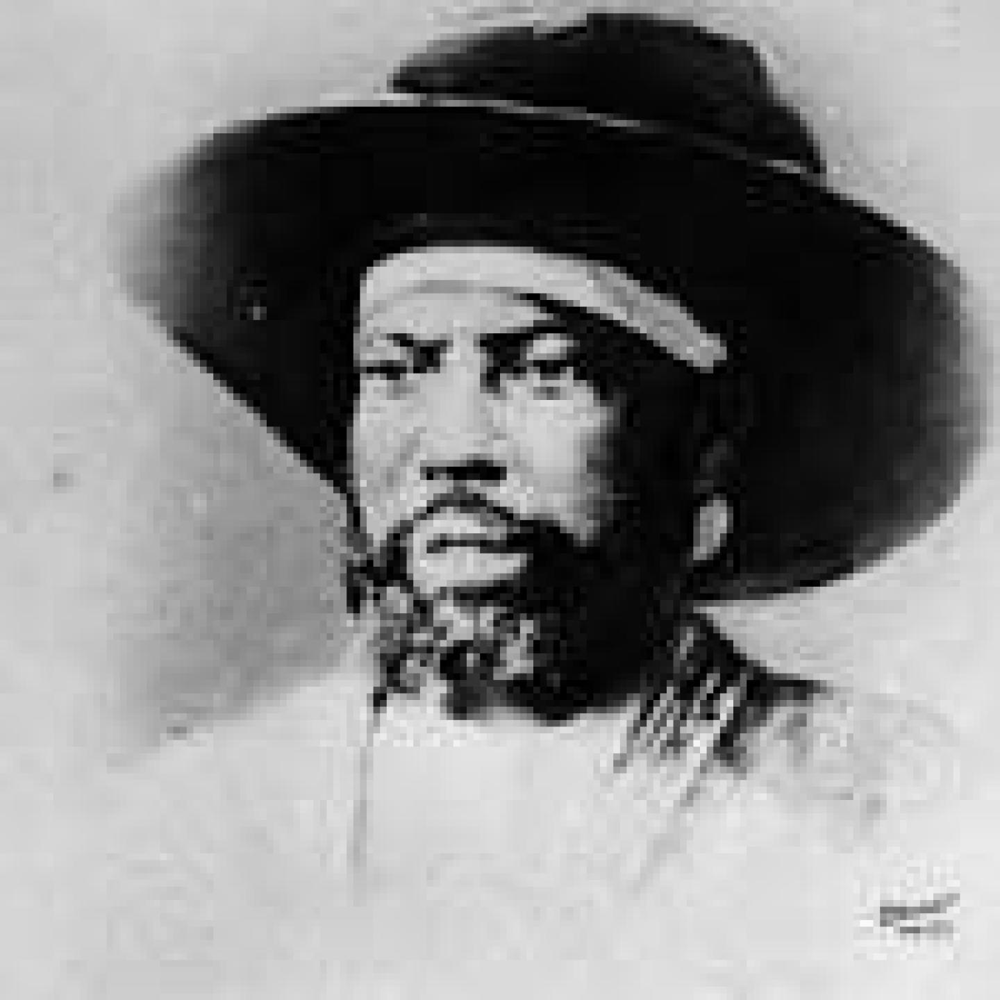
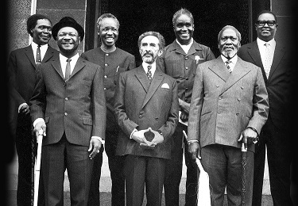

Ethiopian Immigration Office: Prior to having a viable immigration office or process, Ethiopian officials (emperors/princes/warlords) would upon encountering a foreigner decide on a whim, what his fate might be. According to historical record, most foreigners were denied entry into the country. In 1817, Emperor Yohannes put an end to the outdated system and made it a requirement for all foreigners to first be allowed entry, only through the Emperor’s approval. This was given to the governor of the concerned region, allowing the foreigner entry. From region to region, the various governors, upon seeing the seal bearing document would provide safety, food, and shelter till they reached the Emperor’s court. By 1908, Emperor Menelik established the first ministries, and appointed the Ethiopian Ministry of Interior’s Security Directorate to deal with visiting foreigners as well as issuing passports to Ethiopians. This continued until the end of WWII and the expulsion of the fascist Italian occupiers, at which point a new proclamation made the Immigration Department a division of the Ethiopian Ministry of Public Security. With the fall of the monarchy, this system continued till 1980 when it became the Ethiopian Consular and Immigration Division. |
 |
|---|---|
By 1988, the office had yet another name change, becoming the Ethiopian Immigration and Refugee Affairs Division. With the removal of the communist Derg government, the bureau had its name changed twice from the Ethiopian Immigration and Citizenship Department to the Main Department For Immigration & Nationality Affairs. |
 |
Currently we are responsible for the following tasks:
Ethiopia's Main Department For Immigration & Nationality Affairs (MDINA) - Duties
Make sure the movement of the people is legal.
Issue laissez-passé and visa documents to government employees, short-term residents, private sector employees, international organizations, employees of NGOs, journalists, those attending conferences, investors, tourists, for those in transit, etc.
Make sure that travel documents, including passports, one-time laissez-passé, urgent travel documents or refugees travel documents are processed and provided in a proper manner.
Register and control foreign nationals in accordance with the power vested in the Department by Immigration Proclamation No. 354/2003; ascertain their legal status and issue residence visas as appropriate; take appropriate action and deal with foreign nationals who do not abide by the national law and regulation.
Enforce Ethiopian Proclamation No. 378/2003 for those without dual citizenship, and any other laws outlined in detail as well as investigate any appeals and questions in collaboration with all concerned and make decisions are made promptly and effectively.
Ensure that the necessary services are provided to those who abandon Ethiopian citizenship and take citizenship of another country.
Provide passports to nationals, and visa extensions, residence permit, or visa renewals to foreign nationals through the six branch offices connected to the Head Office under a system providing regular service. The Department also provides such services as the issuing of passports and birth certificates, and entry visas for foreign nationals at Ethiopian consulates and embassies abroad as well as at entry ports to the country.
Provide legal status as provided in Proclamation 270/2002 to those who have cancelled their Ethiopian citizenship to enable them contribute to the development of Ethiopia; provide foreign nationals of Ethiopian origin with an identity card valid for five years to allow them to benefit from certain rights within Ethiopia; these can be issued either in Ethiopia or by Ethiopian embassies or missions abroad.
Handle immigration controls at airports and land ports through a system directly connected with the Department’s Head Office in Addis Ababa. This provides entry visas for citizens of all those countries allowed to obtain visas on arrival at Bole International airport.